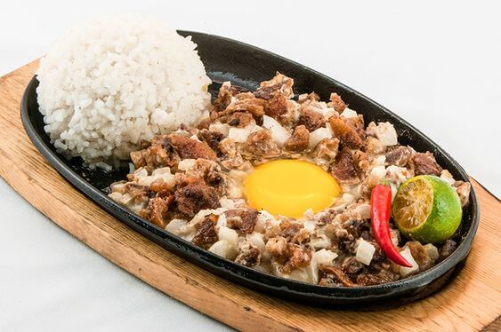
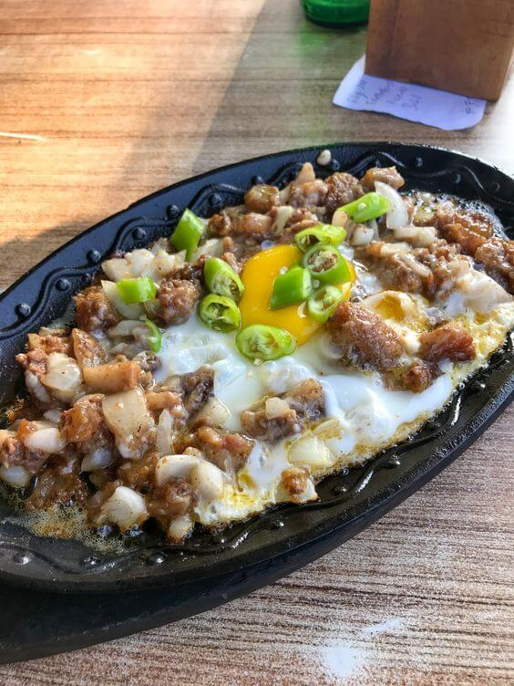

Sa malawak na palamuti ng lutuing Pinoy, ang Sisig ay isa sa mga nagtatangkang pumukaw at magpadama sa ating
mga panlasa. Ito ay isang pagkaing sariwa at may kakaibang timpla na nagpapakita ng husay at kagandahan ng
kultura ng mga Pilipino.
Ang salitang "Sisig" ay nagmula sa salitang Kapampangan na "sisigan," na nangangahulugang "pagsa-saute." Ito
ay isang lutuing gawa sa pinatuyong karne tulad ng baboy, manok, isda, o tenga ng baboy na niluto sa iba't
ibang pampalasa tulad ng bawang, sibuyas, suka, at iba pang mga katas ng prutas tulad ng calamansi. Ang Sisig
ay karaniwang inihahain bilang pulutan o ulam, at kadalasang kaakibat ng mainit na kanin at isang basong
malamig na inumin.
Ang Sisig ay higit pa sa isang pagkaing simpleng inihahanda; ito ay isang sining na nagpapahayag ng kagitingan
at katapangan ng mga Pilipino. Ito ay nagmula sa mga magsasaka at manggagawa ng Kapampangan na dating
gumagamit ng mga natirang bahagi ng baboy upang hindi masayang ang anumang sangkap. Sa pamamagitan ng paggamit
ng iba't ibang pampalasa at pamamaraan ng pagluluto, ang Sisig ay naglalarawan ng kahusayan at pagka-matalino
ng mga Pilipino sa paglikha ng masasarap na putahe.
Ang paghahanda ng Sisig ay hindi lamang tungkol sa lasa nito, kundi pati na rin sa kasiyahan at
pagkakapit-bisig na taglay nito. Ito ay isang pagkaing madalas na inihahanda sa mga salu-salo, pista, o
simpleng mga pagtitipon ng pamilya at kaibigan. Sa bawat kainan ng Sisig, nabubuo ang mga masayang alaala at
pagsasama na nagtataguyod ng diwa ng pagkakaisa at pagmamahalan ng mga Pilipino.
Ang Sisig ay naglalaman ng mga sangkap na nagsasalamin sa yaman ng ating likas na yaman. Mula sa mga prutas
tulad ng calamansi na nagbibigay ng timpla ng asim, hanggang sa mga lokal na pampalasa tulad ng sibuyas,
bawang, at siling labuyo, ito ay nagpapahayag ng pagpapahalaga ng mga Pilipino sa sariling mga produkto at
tradisyon.
Sa huli, ang Sisig ay hindi lamang isang pagkaing kinakain, ito ay isang simbolo ng kasiglaan, kasiyahan, at
pagmamahal ng mga Pilipino sa kanilang kultura. Ito ay nagpapaalala sa atin na ang pagkain ay hindi lamang
tungkol sa sustento ng katawan, kundi pati na rin sa pagpapakita ng ating pagkakakilanlan at pagsasama-sama
bilang isang bansa.
Kaya't samahan natin ang mga sangkap, lasa, at pagmamahal na taglay ng Sisig. Sa bawat kagat ng malasang balat
ng baboy, kasama natin ang mga nagdaang henerasyon na nagbigay-buhay at nag-alaga sa mga tradisyon at alaala
ng mga Pilipino.
Ang Sisig: Isang Pagsabog ng Lasang-Pinoy sa Iyong Bunganga

